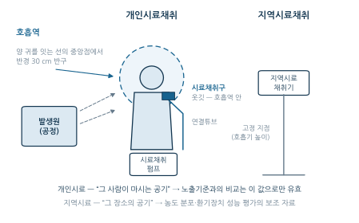
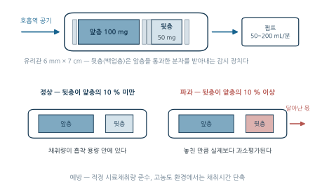
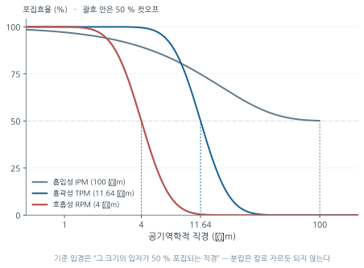
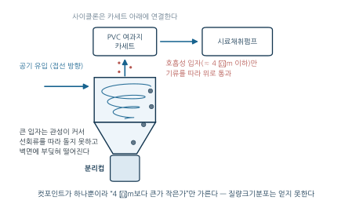
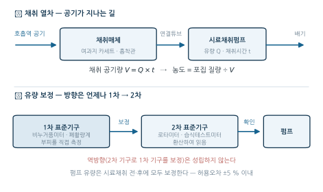

2주차. 작업환경측정 I — 측정 원리와 전략
측정의 목적과 노출의 개념, 시료채취 전략(대상·시기·위치·시간), 가스·증기의 채취(흡착·흡수·확산·순간시료), 입자상 물질의 채취(여과포집·크기별 분립), 유량 보정과 공시료·정도관리
학습목표
이 주를 학습한 후 여러분은 다음을 할 수 있어야 합니다:
- 작업환경측정의 목적과 법적 근거를 설명하고, 측정이 답해야 할 질문을 제시할 수 있다
- 호흡역(breathing zone)의 정의를 설명하고, 개인시료채취가 노출평가의 1차 기준인 이유를 설명할 수 있다
- 시료채취 전략의 네 요소(대상·시기·위치·시간)를 실제 작업장에 적용하여 측정 계획을 수립할 수 있다
- 가스·증기의 채취 방법(고체흡착, 액체흡수, 확산포집, 순간시료)의 원리를 비교하고 파과 현상을 설명할 수 있다
- 입자상 물질의 여과포집 원리와 크기별 분립(사이클론, 직경분립충돌기)의 필요성을 설명할 수 있다
- 펌프 유량 보정과 공시료·회수율·탈착효율 보정을 포함한 농도 계산을 수행하고, 측정 과정의 오차 요인을 평가할 수 있다
1. 왜 측정하는가 — 측정의 목적과 노출의 개념 · 시료채취 전략 — 누구를, 언제, 어디서, 얼마나
1.1 왜 측정하는가 — 측정의 목적과 노출의 개념
측정의 목적
1주차에서 산업위생의 네 영역(AREC) 중 평가(Evaluation)의 핵심이 “노출 수준을 숫자로 답하는 것”임을 보았다. 그 숫자를 만들어내는 활동이 작업환경측정(Occupational Exposure Monitoring) — 작업장 내 유해인자에 대한 근로자의 실제 노출 수준을 정량적으로 파악하는 과정이다. 측정은 단순한 규제 준수 절차가 아니다. 측정이 답하는 질문은 네 가지다.
| 목적 | 측정이 답하는 질문 |
|---|---|
| 노출 수준 파악 | 근로자가 얼마나 유해물질에 노출되고 있는가? |
| 위험성 평가 | 현재 노출 수준이 건강에 해로운 수준인가? |
| 관리 효과 검증 | 설치한 환기장치나 보호구가 실제로 효과가 있는가? |
| 법적 의무 이행 | 산업안전보건법에 따른 정기적 측정 의무를 이행하고 있는가? |
네 번째 목적이 말해 주듯, 우리나라에서 작업환경측정은 산업안전보건법이 정한 사업주의 의무이기도 하다 — 유해인자 취급 공정은 정기적으로 측정해야 하며, 측정 방법의 세부(누구를 몇 명, 몇 시간)는 고용노동부 고시가 정한다. 이번 주에는 측정 자체의 원리와 전략을 다루고, 측정 결과를 노출기준과 비교·판정하는 방법과 한국 작업환경측정 제도의 전체 운영은 3주차로 넘긴다.
노출(Exposure)과 호흡역
노출은 유해인자와 인체가 접촉하는 상황이다. 측정해야 할 것은 작업장 전체의 평균 농도가 아니라, 근로자의 호흡기 근처에서 실제로 흡입되는 농도다.
호흡역은 근로자의 양 귀를 연결하는 가상의 선 중앙점에서 반경 300 mm(30 cm)의 반구형 공간으로 정의된다. 이 영역 내의 공기가 실제로 근로자가 호흡하는 공기다.
왜 이렇게까지 좁게 정의하는가. 유해물질의 농도는 작업장 안에서 균일하지 않아서, 발생원 바로 옆 근로자의 코앞 농도와 몇 미터 떨어진 통로의 농도는 전혀 다른 값일 수 있기 때문이다. 노출평가란 “그 작업장의 공기”가 아니라 “그 사람이 마시는 공기”를 재는 일이다 — 이 원칙이 다음 절의 개인시료채취 우선 원칙으로 이어진다.
1.2 시료채취 전략 — 누구를, 언제, 어디서, 얼마나
측정기기를 들기 전에 먼저 답해야 할 질문이 네 개 있다 — 누구를(대상), 언제(시기), 어디서(위치), 얼마나 오래(시간) 측정할 것인가. 이 넷을 묶어 시료채취 전략(sampling strategy)이라 한다.
위치 — 개인시료채취와 지역시료채취
| 구분 | 개인시료채취 (Personal Sampling) | 지역시료채취 (Area Sampling) |
|---|---|---|
| 위치 | 근로자의 호흡역(옷깃, 헬멧) | 작업장 특정 위치(고정) |
| 목적 | 개인 노출량 평가 | 환경 농도 분포, 배기장치 성능 평가 |
| 지위 | 1차적 노출평가 기준 | 보조적 평가 자료 |
| 장점 | 실제 노출 반영 | 설치 용이, 장시간 측정 가능 |
| 단점 | 근로자 협조 필요, 작업 방해 가능 | 개인 노출량 과소/과대평가 가능 |
개인시료채취에서는 시료채취구(여과지 카세트 또는 흡착관)를 근로자의 옷깃 (호흡역 안)에 부착하고, 허리 벨트에 찬 시료채취펌프와 연결튜브(Tygon, PVC)로 이어, 근로자가 이동하는 내내 함께 측정한다.

작업장 중앙에서 측정한 농도가 낮더라도, 특정 공정의 근로자는 발생원 가까이에서 훨씬 높은 농도에 노출될 수 있다. 지역시료는 “이 장소의 공기”를 말해 줄 뿐 “이 사람의 노출”을 말해 주지 못하므로, 노출기준과의 비교는 개인시료채취 결과로 해야만 유효하다. 지역시료는 오염의 공간적 분포 파악과 환기장치 성능 평가의 보조 자료로 쓴다.
대상 — 동질노출그룹과 최고노출근로자
모든 근로자를 측정하는 것은 현실적으로 불가능하다. 그래서 노출 조건이 유사할 것으로 예상되는 근로자 집단 — 동질노출그룹(Similar Exposure Group, SEG) — 을 묶고, 그 집단에서 표본을 뽑아 측정한다. 설정 기준은 “노출을 결정하는 조건이 같은가”이다 — ① 동일 공정/작업(같은 기계, 같은 작업), ② 동일 유해물질, ③ 유사한 노출 양상(시간·빈도·강도), ④ 유사한 작업환경(환기 조건, 발생원과의 거리).
각 SEG에서 가장 높은 노출이 예상되는 근로자를 반드시 측정 대상에 포함한다. 논리는 보수적 추론이다 — 가장 심하게 노출되는 사람의 노출이 기준 이하라면, 그룹의 나머지 구성원은 더 낮을 것이므로 그룹 전체가 안전하다고 판단할 수 있다.
SEG는 국제적으로 통용되는 노출평가 개념이고, 우리나라에서 실제로 몇 명을 측정할지는 고용노동부 고시가 최소 기준을 정하고 있다. 고시의 측정 단위인 단위작업장소(정상 작업을 수행하는 동일 노출집단의 근로자가 작업하는 장소)는 SEG 개념의 법적 번역인 셈이다.
| 구분 | 기준 |
|---|---|
| 개인시료 최소 인원 | 단위작업장소에서 최고 노출근로자 2명 이상을 동시에 측정 |
| 인원 추가 | 동일 작업 근로자 수가 10명 초과 시 매 5명당 1명 이상 추가 |
| 상한 | 동일 작업 근로자 수가 100명 초과 시 최대 시료채취 근로자 수를 20명으로 조정 가능 |
| 지역시료 지점 | 단위작업장소 넓이 50 m² 이상이면 매 30 m²마다 1개 지점 이상 추가 |
최소 인원이 1명이 아니라 2명 이상인 점에 주목하자. 단 한 명의 측정값은 그 사람의 그날 사정(작업량, 위치, 습관)에 좌우되어 그룹을 대표하기 어렵고, 2명 이상을 동시에 재면 같은 조건에서의 개인 간 차이까지 정보로 얻는다.
단위작업장소의 작업근로자 수가 17명일 때, 개인시료채취로 측정해야 할 최소 근로자 수는?
기본 2명(1~10명) + 11~15명 구간 1명 + 16~20명 구간(17명이 여기에 걸림) 1명 = 4명. 10명을 초과한 시점부터 “매 5명당 1명”이 구간 단위로 추가된다.
시기 — 측정 주기
언제, 얼마나 자주 측정하는가는 유해인자의 위험도와 상황 변화에 따라 달라진다.
| 상황 | 측정 주기 |
|---|---|
| 일반 유해인자 | 6개월 1회 |
| 발암성 물질 (특별관리물질) | 3개월 1회 |
| 노출기준 초과 공정 (개선 후) | 3개월 1회 |
| 신규 설비·공정 | 설치 후 30일 이내 |
주기의 논리는 일관된다 — 위험이 크거나(발암성), 상황이 불확실할수록(초과 이력, 신규 공정) 더 자주 잰다. 신규 공정의 “30일 이내” 규정은 1주차의 예측(Anticipation)과 짝을 이룬다 — 도입 전에 예측했더라도, 도입 후의 실제 노출은 측정으로 확인해야 한다.
시간 — 얼마나 오래 잴 것인가
노출은 하루 작업 동안 계속 변하므로, 원칙은 전일 측정(full-period sampling) — 1일 작업시간(보통 8시간) 동안 연속하여 측정하는 것이다. 고시(측정고시 제18조)는 6시간 이상 연속 측정하거나 등간격으로 나누어 6시간 이상 측정하도록 정하고 있다. 흔히 인용되는 “작업시간의 70% 이상”이라는 기준은 고시에 없다. 하루 중 짧은 한 토막만 재면, 그 토막이 우연히 한산한 시간이었는지 가장 바쁜 시간이었는지에 따라 결과가 크게 달라지기 때문이다. 이렇게 얻은 구간별 농도를 시간으로 가중평균한 값이 시간가중평균농도(TWA)이며, TWA의 계산과 노출기준과의 비교·판정은 3주차에서 다룬다.
측정 시간에는 하한이 하나 더 있다. 분석기기의 정량한계(LOQ)보다 적은 양을 채취하면 결과를 신뢰할 수 없으므로, 예상농도 \(C\)에서 LOQ만큼의 질량이 모이는 데 필요한 최소 시료채취시간을 미리 계산한다.
\[t_{min} = \frac{LOQ}{C\ (\text{mg/m}^3) \times Q\ (\text{m}^3/\text{분})}\]
톨루엔(분자량 92.14, 노출기준 100 ppm)을 노출기준의 10% 농도까지 측정하려 한다. GC의 정량한계는 시료당 0.5 mg, 채취유량은 0.15 L/분이다. 최소 시료채취시간은? (25℃, 1기압)
① 목표 농도: 100 ppm × 10% = 10 ppm \(\rightarrow C = \dfrac{10 \times 92.14}{24.45} = 37.68\ \text{mg/m}^3\) (환산은 §4.4)
② 필요 공기량: \(V = \dfrac{0.5\ \text{mg}}{37.68\ \text{mg/m}^3} = 0.01327\ \text{m}^3 = 13.27\ \text{L}\)
③ 최소 채취시간: \(t = \dfrac{13.27\ \text{L}}{0.15\ \text{L/분}} = \textbf{88.5 분}\) — 이보다 짧게 채취하면 노출기준의 10% 수준 농도는 “있어도 보이지 않는다”.
2. 가스·증기의 채취
2.1 왜 여과지로는 안 되는가
가스와 증기는 분자 상태로 존재하므로(1주차 §3.1) 여과지를 그대로 통과한다. 따라서 가스·증기를 잡으려면 입자를 거르는 것과는 전혀 다른 원리 — 분자를 표면에 붙잡거나(흡착), 액체에 녹이거나(흡수), 확산으로 끌어들이거나, 공기째로 담는(순간시료) — 가 필요하다. 이 네 원리가 곧 이 절의 네 소절이다: 고체흡착관(§2.2, 능동식), 액체흡수(§2.3, 능동식), 확산포집기(§2.4, 수동식), 순간시료채취(§2.5).
2.2 고체흡착관 — 활성탄관과 실리카겔관
가장 널리 쓰이는 방법이다. 흡착제가 충전된 유리관(6 mm × 7 cm)에 펌프로 공기를 통과시키면(유량 50~200 mL/분), 가스·증기 분자가 흡착제 표면에 붙잡힌다.

흡착제는 대상 물질의 극성에 맞추어 고른다. 흡착은 흡착제 표면과 분자 사이의 친화력으로 일어나므로, 표면의 성질과 분자의 성질이 맞아야 잘 붙는다.
| 흡착제 | 적용 물질 | 탈착 방법 |
|---|---|---|
| 활성탄 (Charcoal) | 비극성 유기용제 (벤젠, 톨루엔, 크실렌, 헥산 등) | CS₂ 용매탈착, 열탈착 |
| 실리카겔 (Silica gel) | 극성 화합물 (아민류, 니트로벤젠류, 페놀, 케톤·알데하이드류, 무기산) | 물·메탄올 등 용매탈착 |
| Tenax / XAD-2 | 휘발성 / 준휘발성 유기화합물 | 열탈착 / 용매탈착 |
작업장에서 가장 흔한 유해 가스상 물질이 비극성 유기용제이고, 활성탄이 바로 이들과 친화력이 큰 흡착제이기 때문에 “유기용제 측정 = 활성탄관”이 표준이 되었다. 아민류·니트로벤젠류처럼 극성이 큰 분자는 극성 표면을 가진 실리카겔이 잡는다. 알코올류·에스테르류·할로겐화 탄화수소류는 극성이 있어도 표준 채취매체는 활성탄관이다. 채취가 끝나면 흡착된 분자를 다시 떼어내(탈착, desorption — 활성탄은 CS₂ 용매탈착 또는 열탈착) 분석기기에 넣는데, 이때 붙잡은 양의 100%가 회수되지는 않는다 — 이 비율이 §4.3의 탈착효율이다.
흡착제가 잡을 수 있는 양에는 한계가 있다. 흡착 용량을 초과하면 그 뒤로 들어오는 분자는 앞층을 그대로 통과해 버린다 — 이를 파과라 하며, 놓친 만큼 실제 농도보다 과소평가된다. 흡착관에 뒷층(백업층)이 있는 이유가 바로 파과의 감시다 — 앞층을 통과한 분자는 먼저 뒷층에 잡히므로,
- 확인 방법: 뒷층 분석 결과가 앞층의 10% 이상이면 파과 발생으로 판단한다
- 예방: 적정 시료채취량 준수, 고농도 환경에서는 채취시간 단축
무엇: ① 활성탄관 실물(양끝을 절단하기 전후, 앞층·뒷층과 유리솜이 보이는 근접 촬영), ② 시료채취펌프를 허리에 차고 옷깃에 채취구를 단 근로자의 착용 모습 (전신 또는 상반신).
왜: 그림 3.2 는 구조의 논리를 보여 주지만 크기 감각을 주지 못한다. “유리관 6 mm × 7 cm”가 실제로 얼마나 작은지, 펌프가 근로자에게 얼마나 부담이 되는지(§2.4 수동식의 장점을 이해하는 전제)는 사진이라야 전달된다.
출처 후보: NIOSH/CDC 이미지 라이브러리(퍼블릭 도메인), OSHA 웹사이트, 한국산업안전보건공단(KOSHA) 자료실, 위키미디어 커먼즈. 직접 촬영도 가능하다 — 학과 실습실의 채취펌프·활성탄관을 촬영하면 라이선스 문제가 없다.
대안: 확보가 어려우면 자(scale bar)를 넣은 흡착관 단면 모식도로 대체.
2.3 액체흡수 — 임핀저와 버블러
수용성 가스나 반응성이 커서 흡착관이 맞지 않는 화합물은, 공기를 흡수액 속으로 통과시켜 기포와 액체가 접촉하는 동안 분자를 용해·반응시켜 잡는다 — 포름알데히드는 DNPH 용액, 암모니아는 희황산, 염소는 수산화나트륨, 황화수소는 카드뮴황산이 대표적 짝이다. 능동식(펌프 사용) 흡수액 채취의 일반적 유량 기준은 1.0 L/분 이하이다.
액체흡수의 정확도를 좌우하는 것은 흡수효율이다. 효율을 높이는 원칙은 모두 하나의 물리적 논리 — 기체와 액체의 접촉을 늘리고, 잡은 분자가 다시 빠져나가지 못하게 한다 — 에서 나온다.
| 방법 | 이유 |
|---|---|
| 흡수액의 온도를 낮춘다 | 휘발성을 제한하여 용해된 분자가 다시 빠져나가지 않게 한다 |
| 프리티드 버블러(fritted bubbler)를 쓴다 | 가는 구멍으로 기포를 잘게 쪼개 기-액 접촉면적을 넓힌다 |
| 버블러를 2개 이상 직렬 연결한다 | 앞 버블러를 통과한 분자를 뒤 버블러가 다시 잡는다 |
| 시료채취유량을 낮춘다 | 흡수액과의 접촉시간을 늘린다 |
거꾸로 하면 효율은 떨어진다 — 온도를 높이면 녹았던 분자가 다시 휘발하고, 유량을 높이면 기포가 액체를 스칠 시간이 짧아진다.
직렬 연결의 총 포집효율은 “첫 번째가 놓친 몫만 두 번째가 잡는다”는 논리로 유도된다. 효율 \(\eta_1\)인 기구를 빠져나가는 비율이 \((1-\eta_1)\)이므로,
\[\eta_{total} = 1 - (1-\eta_1)(1-\eta_2), \qquad \text{같은 효율 } n\text{개 직렬: } \eta_{total} = 1 - (1-\eta)^n\]
(1) 포집효율 80%인 임핀저 2개를 직렬 연결하면 총 포집효율은?
(2) 첫 번째 90%, 두 번째 50%인 임핀저를 직렬 연결하면?
(1) \(\eta_{total} = 1 - (1-0.8)^2 = 1 - 0.04 = 0.96 \rightarrow \textbf{96\%}\)
(2) \(\eta_{total} = 1 - (1-0.9)(1-0.5) = 1 - 0.05 = 0.95 \rightarrow \textbf{95\%}\)
2.4 수동식 시료채취 — 확산포집기
수동식 시료채취(passive sampling)는 펌프 없이 확산 원리만으로 채취한다. 펌프 없이도 정량이 가능한 이론적 근거는 Fick의 확산 제1법칙 — 확산에 의한 물질의 이동속도는 농도 기울기에 비례한다는 것이다.
\[J = -D\frac{dC}{dx} \quad \Longrightarrow \quad W = \frac{D \cdot A}{L}(C_{air} - C_{sorbent}) \cdot t\]
- \(J\): 단위면적당 물질이동속도(flux), \(D\): 확산계수, \(A\): 확산 단면적, \(L\): 확산경로 길이(확산층 두께), \(t\): 채취시간
- \(C_{air}\): 공기 중 농도, \(C_{sorbent}\): 흡착제 표면 농도 (이상적으로 0)
흡착제 표면의 농도를 0에 가깝게 유지하면 채취량 \(W\)는 공기 중 농도 \(C_{air}\)에 비례한다. \(D\), \(A\), \(L\)이 기하학적으로 고정되어 “가상의 유량”이 정해지는 셈이라, 제조사가 제시하는 등가 시료채취량(mL/분)을 펌프 유량 대신 써서 농도를 계산한다.
| 장점 | 단점 |
|---|---|
| 펌프 불필요 → 소음·진동 없음, 본질안전 | 4시간 이상 착용 필요 (충분한 시료량 확보) |
| 가볍고 간편 → 근로자 부담 최소화 | 정지 공기에서는 부정확 |
| 펌프 보정·충전의 노동력 절약, 대규모 조사에 경제적 | 고농도에서 포화 가능 · 채취량이 적어 시료량 확보에 불리 |
수동식 시료채취기의 포집 원리는 확산·투과·흡착이며, 흡수는 포함되지 않는다. 흡착은 분자가 고체 표면에 붙는 현상, 흡수는 액체 내부로 녹아드는 현상이다(§2.3의 임핀저가 흡수) — 수동식 포집기 안에 있는 것은 고체 흡착제다. 또한 수동식은 농도 기울기(농도 구배)의 영향을 받는다 — Fick 법칙의 \((C_{air} - C_{sorbent})\) 항이 바로 그것이다.
2.5 순간시료채취 (Grab Sampling)
지금까지의 방법이 일정 시간 공기를 통과시켜 물질을 농축하는 연속시료채취라면, 순간시료채취는 공기 자체를 그대로 받아 담는다. 시료채취백(Tedlar bag 등), 진공 플라스크, 스테인리스 스틸 캐니스터, 주사기가 여기에 속한다(흡수액을 쓰는 버블러·임핀저는 연속식이다).
순간시료채취를 사용할 수 없는 경우는 세 가지이며, 모두 “농축하지 않는다”는 특성에서 나온다.
- 유해물질의 농도가 시간에 따라 변할 때 — 한 순간의 공기는 그 순간만 대표한다
- 시간가중평균치(TWA)를 구하고자 할 때 — 하루의 평균은 하루 동안 재야 한다
- 공기 중 농도가 낮을 때 — 담은 공기의 농도가 검출기의 검출한계보다 높아야 한다
반대로 반응성이 없거나 비흡착성인 가스상 물질은 순간시료채취로 채취할 수 있다. 시료채취백을 쓸 때는 오염물질과 반응성이 없는 재질을 고르고, 누출검사를 실시하며, 순수공기로 내부를 씻어낸 후 대상 공기로 수차례 치환해야 한다.
3. 입자상 물질의 채취
3.1 크기가 다르면 다른 먼지다 — 크기별 시료채취의 논리
1주차 §3.1에서 보았듯, 입자상 물질(에어로졸)의 건강영향은 입자 크기가 호흡기 어디까지 들어가는가에 의해 결정된다. 10 μm를 넘는 입자는 대부분 코와 목에서 여과되어 재채기·기침으로 제거되고, 4~10 μm는 기관지 점막에 침착하여 섬모운동으로 배출되며, 4 μm 미만은 폐포(가스교환 영역)까지 도달하여 제거가 매우 느리다(진폐증의 무대).
같은 “총 먼지 1 mg/m³”라도, 그것이 폐포까지 들어가는 미세 입자인지 코에서 걸러지는 굵은 입자인지에 따라 위험이 전혀 다르다. 그래서 측정도 건강영향이 나타나는 크기 분획만 골라서 해야 한다 — 이것이 입자 크기별 시료채취(size-selective sampling)의 논리다.
ACGIH는 침착 부위를 기준으로 입자상 물질을 세 가지로 구분한다. 각 분류의 기준 크기는 “그 크기의 입자가 50% 침착(포집)되는 공기역학적 직경”인 평균입경이다. 100%가 아니라 50%인 이유는, 호흡기의 여과도 시료채취기의 분립도 칼로 자르듯 되지 않고 크기에 따라 확률적으로 일어나기 때문이다.
| 분류 | 영문·약어 | 기준 입경 | 독성이 나타나는 부위 |
|---|---|---|---|
| 흡입성 입자상 물질 | Inhalable, IPM | 입경범위 0~100 μm | 호흡기계 어느 부위에 침착하더라도 유해 |
| 흉곽성 입자상 물질 | Thoracic, TPM | 평균입경 10 μm | 기도(폐기도)와 가스교환 부위에 침착 |
| 호흡성 입자상 물질 | Respirable, RPM | 평균입경 4 μm | 폐포(가스교환 부위)에 침착 |
세 분류를 포집효율 곡선으로 겹쳐 보면 “50% 컷오프”의 뜻이 눈에 들어온다. 곡선은 어느 것도 수직으로 서 있지 않다 — 어떤 크기의 입자든 일부는 걸리고 일부는 통과하며, 기준 입경은 그 확률이 반반이 되는 지점일 뿐이다.

세 분류의 정의를 서로 대비해 이해해 두자. “호흡기계 어느 부위에 침착하더라도 유해한 물질”을 대상으로 하는 것은 흡입성뿐이다 — 납·목분진·시멘트가 그 예로, 납은 코 점막에 붙어도 흡수되어 전신독성을 일으키므로 흡입성 분획으로 잰다. 반면 유리규산(석영)·석면·용접흄처럼 폐포에 도달해야 병을 일으키는 물질은 호흡성 분획(평균입경 4 μm)으로 잰다. 흉곽성(10 μm)은 그 중간 — 기도 수준까지 들어가는 입자를 대상으로 한다.
3.2 여과포집 — 분진 측정의 기본
입자상 물질 채취의 기본은 여과(filtration)다. 펌프(유량 1~2.5 L/분)로 공기를 여과지에 통과시키면 입자가 여과지에 걸리고, 채취 전후의 무게 차이 (중량분석) 또는 여과지에 모인 물질의 화학 분석으로 농도를 구한다. 여과지도 흡착제처럼 대상 물질과 분석 방법에 맞추어 고른다.
| 여과지 종류 | 재질 | 적용 물질 | 분석 방법 |
|---|---|---|---|
| PVC 여과지 | 폴리비닐클로라이드 | 총분진, 용접흄, 오일미스트 | 중량분석 (gravimetric) |
| MCE 여과지 | 혼합셀룰로오스에스테르 | 중금속(납, 카드뮴 등), 석면 | 산분해 → 원자흡광분석, 위상차현미경 |
| 유리섬유 여과지 | 붕규산 유리 | PAHs, 고온 시료 | 용매추출 → GC/MS |
| 은멤브레인 | 은 | 유리규산(실리카) | X선 회절분석 |
| 테플론(PTFE) | 폴리테트라플루오로에틸렌 | 산/알칼리 미스트 | 중량분석, IC |
중량분석은 여과지의 “무게 차이”가 곧 시료량이므로, 여과지 자체의 무게가 흔들리면 안 된다. PVC 여과지는 소수성(hydrophobic)이라 습기에 의한 질량 변화가 적어 중량분석에 적합하다. 다만 정전기의 영향을 받으므로, 칭량 전 최소 24시간 이상 데시케이터에서 평형시켜야 한다. 반면 중금속처럼 여과지를 산으로 녹여 분석하는 경우는 산분해가 잘 되는 MCE 여과지를 쓴다.
3.3 입경분립 채취기구 — 사이클론과 직경분립충돌기
여과지는 크기를 가리지 않고 입자를 잡는다. §3.1의 논리대로 호흡성 분진(4 μm)만 재려면, 그보다 큰 입자를 여과지에 도달하기 전에 물리적으로 제거해야 한다 — 이 역할을 하는 장치가 입경분립 채취기구다.
(1) 사이클론(Cyclone) — 원심력(관성)을 이용한다. 공기를 접선 방향으로 불어넣어 선회류를 만들면, 관성이 큰(무거운, 큰) 입자는 곡선을 따라 돌지 못하고 벽면에 충돌하여 분리컵으로 떨어지고, 호흡성 입자만 기류를 따라 여과지에 도달한다.

사이클론은 호흡성 입자상 물질을 채취하도록 고안된 기구로(PVC 여과지 카세트 아래에 연결), 사용할 때마다 내부를 청소하고 검사해야 한다.
(2) 직경분립충돌기(Cascade Impactor) — 관성충돌 원리를 여러 단으로 쌓은 장치다. 단계마다 노즐 지름을 줄여 가면, 단이 내려갈수록 더 작은 입자까지 충돌판에 걸리므로, 입자를 입경별로 나누어 채취할 수 있다.
| 항목 | 사이클론 | 직경분립충돌기 |
|---|---|---|
| 사용 편의·비용 | 간편하고 경제적 | 시료채취가 까다롭고 비용이 많이 듦 |
| 채취 준비 | 별도 처리 불필요 | 준비에 시간이 오래 걸리고, 경험 있는 전문가의 철저한 준비 필요 |
| 매체 코팅 | 필요 없음 | 되튐 방지를 위한 처리 필요 |
| 되튐(bounce) 손실 | 염려 없음 | 되튐·과부하로 인한 시료 손실 발생 가능 |
| 호흡성 자료 | 쉽게 얻을 수 있음 | 얻을 수 있음 |
| 입자의 질량크기분포 | 얻을 수 없음 | 얻을 수 있음 |
| 흡입성·흉곽성·호흡성 크기별 분포와 농도 | 계산 불가 | 계산 가능 |
| 호흡기 부분별 침착 입자크기 자료 | 추정 불가 | 추정 가능 |
두 기구의 차이는 구조에서 바로 따라 나온다. 사이클론은 컷포인트가 하나뿐인 분리기라 “4 μm보다 큰가 작은가”만 가르므로, 호흡성 분획은 간편하게 얻지만 질량크기분포는 알 수 없다. 여러 단의 컷포인트를 가진 직경분립충돌기는 크기별 분포·농도와 호흡기 부분별 침착 자료까지 주지만, 그 대가로 준비가 까다롭고 되튐 손실 위험을 안는다. 일상적 노출평가에는 사이클론, 입경 분포 자체가 필요한 정밀조사에는 충돌기다.
무엇: ① 10 mm 나일론 사이클론과 PVC 여과지 카세트를 결합한 조립체 (분리컵을 열어 포집된 조대 입자가 보이면 더 좋다), ② 직경분립충돌기의 분해 사진 — 단마다 노즐이 작아지는 것이 보이는 구도.
왜: 그림 3.4 은 원리를 설명하지만, “사이클론이 카세트 아래에 연결된다”는 조립 순서와 충돌기의 다단 구조는 실물을 보아야 손에 잡힌다. 표 표 3.10 의 “준비가 까다롭다”는 서술도 분해 사진 한 장이면 바로 납득된다.
출처 후보: NIOSH Manual of Analytical Methods(퍼블릭 도메인)의 기구 도판, NIOSH/CDC 이미지 라이브러리, 제조사 카탈로그(사용 허가 필요), 학과 실습실 직접 촬영.
대안: 충돌기 사진을 못 구하면 단별 노즐 지름과 컷포인트를 표시한 다단 단면 모식도로 대체.
4. 유량 보정, 공시료와 정도관리
4.1 농도 계산의 논리 — 분자와 분모
지금까지의 모든 채취 방법은 결국 하나의 식으로 수렴한다.
\[\text{농도 (mg/m}^3\text{)} = \frac{\text{포집된 물질의 질량 (mg)}}{\text{채취 공기량 (m}^3\text{)}}\]
분자(질량)는 분석기기가 주고, 분모(공기량)는 유량 × 채취시간으로 계산한다. 이 단순한 구조가 정도관리의 지도를 그려 준다 — 분모가 틀리면 (유량 오차), 분자가 틀리면(오염, 회수 손실) 농도가 그만큼 틀린다. 유량이 10% 틀리면 농도도 10% 오차가 난다. 실제 실험 조건을 모두 반영한 완성형 산출식은 다음과 같다.
\[C\ (\text{mg/m}^3) = \frac{(W_f + W_b) - (B_f + B_b)}{DE \times Q \times t}\]
- \(W_f, W_b\): 흡착관 앞층·뒷층에서 분석된 질량 (여과지의 경우 채취 전후 중량차)
- \(B_f, B_b\): 공시료(blank)의 앞층·뒷층에서 분석된 질량
- \(DE\): 탈착효율(흡착제) 또는 회수율(여과지), 소수로 대입
- \(Q\): 채취유량(m³/분), \(t\): 채취시간(분)
이 식의 세 가지 보정 — 유량(\(Q\)), 공시료(\(B\)), 탈착효율·회수율(\(DE\)) — 을 이 절에서 차례로 살펴본다. 분모를 만드는 장치의 배열과 그 유량을 누가 보증하는지를 함께 보면 다음과 같다.

4.2 펌프 유량 보정
채취 공기량은 직접 재는 것이 아니라 “유량 × 시간”으로 계산하므로, 시료채취 전·후에 펌프 유량을 반드시 보정해야 한다(허용오차 ±5% 이내). 유량 보정에 쓰는 기구는 두 등급으로 나뉜다.
| 구분 | 정의 | 해당 기구 |
|---|---|---|
| 1차 표준기구 (Primary standard) | 물리적 차원인 공간의 부피를 직접 측정할 수 있는 기구 | 비누거품미터(비누막 유량계), 폐활량계(Spirometer), 가스치환병, 유리 피스톤미터, 흑연 피스톤미터, 피토관(Pitot tube, 기류 측정) |
| 2차 표준기구 (Secondary standard) | 부피를 직접 재지 못하고, 1차 표준기구로 보정한 뒤 사용하는 기구 | 로타미터(Rotameter), 습식테스트미터(Wet-test meter), 건식가스미터, 오리피스미터, 열선기류계 |
구분의 본질은 “무엇에 기대어 값을 내는가”이다. 비누거품미터는 비눗방울 막이 눈금 사이의 부피를 지나는 시간을 재므로 물리적 차원만으로 유량이 나오는 1차 표준이지만, 로타미터는 부표(float)의 높이를 유량으로 환산해 읽는 기구라 그 눈금 자체를 1차 표준으로 검증받아야 한다. 그래서 보정의 방향은 언제나 1차 → 2차이며, 그 역은 성립하지 않는다. 현장에서는 간편한 로타미터를, 실험실에서는 비누거품미터나 습식테스트미터를 주로 쓴다.
4.3 공시료·회수율·탈착효율
분자(질량) 쪽의 세 가지 보정 개념이다.
| 용어 | 정의 (고용노동부 고시) | 계산에서의 취급 |
|---|---|---|
| 공시료(바탕시험, blank) | 시료에 대한 처리·측정을 할 때, 시료를 사용하지 않고 같은 방법으로 조작한 측정치를 빼는 것 | 분석값에서 뺀다 |
| 회수율(recovery) | 여과지에 채취된 성분을 추출과정을 거쳐 분석 시 실제 검출되는 비율 | 농도를 회수율로 나눈다 |
| 탈착효율(desorption efficiency) | 흡착제에 흡착된 성분을 추출과정을 거쳐 분석 시 실제 검출되는 비율 | 농도를 탈착효율로 나눈다 |
\[\text{회수율(\%)} = \frac{\text{분석량}}{\text{첨가량}} \times 100\]
세 개념이 각각 다른 오차를 잡는다. 공시료는 “채취하지 않았는데도 검출되는 양”(매체·운반·보관 중의 오염)을 잡아내는 대조군 — 시료와 똑같이 다루되 공기만 통과시키지 않은 매체를 함께 분석하여, 그 값을 시료 분석값에서 뺀다. 회수율·탈착효율은 “잡았는데 되찾지 못한 양”의 보정이다. 탈착효율 90%란 흡착제에 잡힌 양의 90%만 분석기로 넘어왔다는 뜻이므로, 원래 잡혔던 양을 되살리려면 0.9로 나눈다 — 곱하면 이중으로 깎아 과소평가하게 된다. 탈착효율 실험은 ① 탈착효율의 보정, ② 시약의 오염 보정, ③ 흡착관의 오염 보정을 위해 실시한다(여과지의 오염 보정은 회수율 실험의 대상이다).
막여과지로 납을 채취하여 시료 여과지에서 4 μg, 공시료 여과지에서 0.005 μg이 검출되었다. 회수율 95%, 채취 공기량 100 L일 때 공기 중 납 농도는?
공시료는 빼고, 회수율로는 나눈다.
\[C = \frac{(4 - 0.005)/0.95}{0.1\ \text{m}^3} = \frac{4.205\ \mu\text{g}}{0.1\ \text{m}^3} = 42.05\ \mu\text{g/m}^3 = \textbf{0.04 mg/m}^3\]
4.4 ppm ↔︎ mg/m³ 환산
가스·증기의 농도는 부피비(ppm)와 질량농도(mg/m³) 두 가지로 표시한다. 분석은 질량을 주고 기준 농도는 흔히 ppm으로 제시되므로 두 단위를 오갈 수 있어야 하는데, 두 값을 잇는 것이 몰부피다.
\[\text{ppm} = \frac{\text{mg/m}^3 \times 24.45}{M} \qquad\qquad \text{mg/m}^3 = \frac{\text{ppm} \times M}{24.45}\]
\(M\)은 분자량(g/mol). 24.45 L/mol은 25℃·1기압 기준값이며 0℃·1기압(표준상태)이면 22.4 L/mol을 쓴다. 부피비 백분율과의 관계는 \(1\% = 10{,}000\ \text{ppm}\) (0.05% = 500 ppm).
톨루엔(분자량 92) 취급 작업장에서 활성탄관으로 총 72 L를 채취했다. 앞층에서 900 μg, 뒷층에서 100 μg이 분석되었고 공시료에서는 검출되지 않았다. 탈착효율 90%일 때 공기 중 농도(ppm)는? (25℃, 1기압)
① 질량 보정 — 앞층과 뒷층은 더한 뒤 탈착효율로 나눈다. \(W = \dfrac{900 + 100}{0.9} = 1111.1\ \mu\text{g} = 1.1111\ \text{mg}\)
② 질량농도: \(C = \dfrac{1.1111\ \text{mg}}{0.072\ \text{m}^3} = 15.43\ \text{mg/m}^3\)
③ ppm 환산: \(\text{ppm} = \dfrac{15.43 \times 24.45}{92} = \textbf{4.1 ppm}\)
한 가지 더 — 뒷층에서 앞층의 10%(= 900 μg의 10%)가 검출되었으므로 파과 여부도 함께 검토해야 한다(§2.2).
4.5 오차와 한계 — 측정을 얼마나 믿을 수 있는가
누적오차
측정 전 과정에는 유량·측정시간·회수율·분석의 오차가 각각 개입한다. 이들은 서로 독립이므로 단순히 더하지 않고 제곱합의 제곱근으로 합성한다.
\[E_c = \sqrt{E_1^2 + E_2^2 + \cdots + E_n^2}\]
제곱해서 합치는 구조 때문에 누적오차는 가장 큰 항이 지배하며, 정도관리 자원을 어디에 먼저 쓸지가 이 식에서 바로 나온다 — 가장 큰 오차부터 줄인다.
유량 15%, 측정시간 3%, 회수율 9%, 분석 5%의 오차가 있을 때 누적오차는?
\[E_c = \sqrt{15^2 + 3^2 + 9^2 + 5^2} = \sqrt{225 + 9 + 81 + 25} = \sqrt{340} = \textbf{18.4\%}\]
유량 오차만 15% → 10%로 낮추면 \(E_c' = \sqrt{215} = 14.7\%\) — 가장 큰 항을 5%p 줄이자 전체가 3.8%p 줄었다(어느 항을 줄일지의 판단은 연습문제 5).
검출한계(LOD)와 정량한계(LOQ)
분석기기가 “볼 수 있는” 양과 “믿을 수 있는” 양은 다르다.
| 구분 | 정의 | 통계적 정의 |
|---|---|---|
| 검출한계 (LOD) | 분석기기가 검출할 수 있는 가장 작은 양 — 바탕선량(background)과 구별하여 분석될 수 있는 가장 적은 양 | 표준편차의 3배 |
| 정량한계 (LOQ) | 분석기기가 정량할 수 있는 가장 작은 양 — 분석결과가 신뢰성을 가질 수 있는 양 | 표준편차의 10배, 또는 검출한계의 3~3.3배 |
\[LOQ \approx 3 \sim 3.3 \times LOD\]
방향이 중요하다 — LOQ는 항상 LOD보다 크다. “검출은 되지만 정량은 안 되는” 구간(LOD와 LOQ 사이)의 값은 “있다”고는 말할 수 있어도 “얼마”라고는 말할 수 없다. §1.2의 최소 시료채취시간이 LOD가 아니라 LOQ를 기준으로 하는 이유가 여기에 있다 — 노출평가에 필요한 것은 신뢰할 수 있는 숫자이기 때문이다.
측정값이 노출기준을 초과했는지를 시료채취·분석오차(SAE)까지 반영해 통계적으로 판정하는 방법과 노출자료의 해석은 3주차에서 다룬다.
5. 측정에 쓰이는 기초 물리·화학
시료채취와 분석의 계산은 몇 가지 기초 관계 위에 서 있다. 따로 정리해 두면 앞의 절들이 어디서 숫자를 가져오는지 보인다.
5.1 기체 법칙
| 법칙 | 일정한 것 | 관계 |
|---|---|---|
| 보일 (Boyle) | 온도 | \(PV = \text{일정}\) — 압력이 오르면 부피는 준다 |
| 샤를 (Charles) | 압력 | \(V \propto T\) — 온도가 오르면 부피가 는다 |
| 게이-뤼삭 (Gay-Lussac) | 부피 | \(P \propto T\) — 온도가 오르면 압력이 는다 |
| 이상기체 | — | \(PV = nRT\), 셋을 하나로 합친 식 |
이상기체 식에서 1몰의 기체가 차지하는 부피(몰부피)는 0 ℃·1기압에서 22.4 L, 25 ℃·1기압에서 24.45 L이다. §4.4의 ppm ↔︎ mg/m³ 환산 상수 24.45가 여기서 나온다. 채취한 공기의 부피를 표준상태로 환산할 때도 같은 식을 쓴다.
5.2 용액의 농도와 표준가스
분석실에서 시약과 표준액을 만드는 데 필요한 농도 표기는 셋이다.
| 표기 | 정의 | 예 |
|---|---|---|
| 몰농도 (M) | 용액 1 L에 든 용질의 몰수 | 5 M 황산 |
| 노르말농도 (N) | 용액 1 L에 든 용질의 당량수 (= M × 이온가) | 1 N HCl = 1 M HCl |
| 백분율 | 무게(w/w) 또는 무게/부피(w/v) 백분율 | 35 % 염산 |
희석의 원리는 하나 — 용질의 양은 변하지 않는다. \(M_1 V_1 = M_2 V_2\)이므로, 5 M 황산으로 0.004 M 용액 3 L를 만들려면 \(V_1 = 0.004 \times 3000 / 5 = 2.4\) mL를 취한다. 진한 시약에서 만들 때는 함량과 비중을 거친다. 1 N HCl 500 mL에 필요한 HCl은 \(1 \times 0.5 \times 36.5 = 18.25\) g이고, 35 % 염산(비중 1.18)이라면 \(18.25 / 0.35 / 1.18 \approx 44\) mL다.
기기 검량과 채취효율 실험에는 농도를 아는 표준가스가 필요하다. 만드는 법은 둘이다. 정적(static) 방법은 부피를 아는 용기에 물질을 일정량 넣어 농도를 고정하는 것으로 간편하지만 벽면 흡착으로 농도가 변할 수 있고, 동적(dynamic) 방법은 물질을 연속으로 흘려 희석 공기와 섞는 것으로 장치가 복잡한 대신 농도를 바꿀 수 있고 벽면 흡착의 영향이 적으며 오랫동안 일정 농도를 공급한다.
5.3 입자 직경의 정의
입자는 구가 아니므로 “직경”은 정의에 따라 달라진다.
| 직경 | 정의 | 성질 |
|---|---|---|
| 페레트(Feret) 직경 | 입자의 한쪽 끝에서 다른 쪽 끝까지의 거리 | 과대평가 경향 |
| 마틴(Martin) 직경 | 입자의 투영 면적을 이등분하는 선의 길이 | 과소평가 경향 |
| 등면적 직경 | 입자와 투영 면적이 같은 원의 직경 | 현미경 계측의 기준 |
| 공기역학적 직경 | 침강속도가 같은 밀도 1 g/cm³의 구의 직경 | 호흡기 침착과 시료채취기 분립의 기준(§3.1) |
| 질량중앙직경 (MMAD) | 질량 기준 누적분포의 50 % 지점 | 에어로졸 분포의 대표값 |
앞의 셋은 현미경으로 보이는 모양의 직경이고, 공기역학적 직경은 공기 중에서 어떻게 움직이는가의 직경이다. 호흡기 침착과 사이클론 분립을 결정하는 것은 후자다.
5.4 정확도와 정밀도
| 개념 | 뜻 | 나타내는 값 |
|---|---|---|
| 정확도 (accuracy) | 측정값이 참값에 얼마나 가까운가 | 편향(bias), 회수율 |
| 정밀도 (precision) | 반복 측정값이 서로 얼마나 가까운가 | 표준편차, 변이계수(CV = 표준편차 ÷ 평균) |
정밀하지만 부정확한 측정(늘 같은 만큼 치우침)과 정확하지만 정밀하지 못한 측정(평균은 맞지만 흩어짐)은 다른 문제이고 대책도 다르다 — 앞은 보정, 뒤는 반복 횟수와 절차의 표준화다. 변이계수는 평균에 대한 상대값이라 단위와 크기가 다른 자료의 정밀도를 견줄 수 있다(3주차).
5.5 측정고시의 표기 약속
「작업환경측정 및 정도관리 등에 관한 고시」는 분석 조건을 적을 때 쓰는 온도의 말과 결과의 단위를 미리 정해 두고 있다. 같은 말을 다르게 읽지 않기 위한 약속이다.
| 표현 | 뜻 |
|---|---|
| 표준온도 | 20 ℃ |
| 상온 / 실온 | 15~25 ℃ / 1~35 ℃ |
| 미온 | 30~40 ℃ |
| 찬 곳 | 따로 정하지 않으면 0~15 ℃ |
| 냉수 / 온수 / 열수 | 15 ℃ 이하 / 60~70 ℃ / 약 100 ℃ |
결과의 단위는 가스·증기가 ppm, 분진·미스트·흄이 mg/m³, 소음이 dB(A), 고열이 WBGT(℃), 석면이 개/cm³다(3주차 §4.3).
6. 분석기기 개관
채취한 시료의 분자(질량)를 주는 것이 분석기기다. 무엇을 재는가에 따라 원리가 갈린다.
| 기기 | 원리 | 대상 |
|---|---|---|
| 가스크로마토그래피 (GC) | 운반기체가 시료를 시료주입구 → 분리관(컬럼) → 검출기 → 기록계로 나르며, 성분마다 컬럼을 통과하는 속도가 달라 분리된다. 검출기는 FID(유기물 일반), ECD(할로겐 화합물) 등 | 유기용제 증기(활성탄관 시료) |
| 고성능 액체크로마토그래피 (HPLC) | 액체 이동상으로 분리. 열에 약하거나 휘발하지 않는 물질에 적합 | 포름알데히드(DNPH 유도체), PAHs |
| 원자흡광광도계 (AAS) | 불꽃·흑연로에서 원자화된 바닥 상태 원자가 원소 고유 파장의 빛을 흡수하는 양을 잰다 | 금속(납·카드뮴 등) |
| 유도결합플라즈마 (ICP-OES) | 6,000~10,000 K 플라즈마에서 들뜬 원자가 바닥 상태로 돌아오며 내는 발광 스펙트럼을 잰다. 여러 원소를 동시에, 넓은 농도 범위에서 직선적으로 | 금속 다원소 동시분석 |
흡광 분석은 Beer-Lambert 법칙을 따른다. 흡광도 \(A = -\log T = \varepsilon b c\) (\(T\) 투과율, \(\varepsilon\) 몰흡광계수, \(b\) 광로 길이, \(c\) 농도)이므로 흡광도는 농도에 비례한다. 빛의 절반이 흡수되면 \(A = -\log 0.5 = 0.30\), 90 %가 흡수되면 \(A = 1.0\)이다.
실험실 분석과 달리 현장에서 바로 값을 읽는 것이 직독식 기기다. 가장 단순한 것이 검지관으로, 대상 물질과 반응해 변색하는 시약이 든 유리관에 일정량의 공기를 통과시켜 변색 길이로 농도를 읽는다. 값이 즉시 나오고 싸지만 대상 물질을 미리 알아야 전용 검지관을 고를 수 있고, 민감도가 낮아 고농도용이며, 특이도가 낮아 방해물질의 영향을 받고, 변색은 제조자가 정한 시간에 읽어야 한다. 전자식 직독기(PID·전기화학식 센서)는 연속 기록이 가능해 단시간 피크의 포착에 쓴다(3주차 §2.3).
요약
| 개념 | 핵심 내용 |
|---|---|
| 측정의 목적 | 노출 수준 파악 · 위험성 평가 · 관리 효과 검증 · 법적 의무(산업안전보건법) 이행 |
| 호흡역·개인시료 | 양 귀를 잇는 선의 중앙점에서 반경 30 cm의 반구 — 호흡역의 개인시료가 1차적 노출평가 기준, 지역시료는 농도 분포·환기 성능 평가의 보조 자료 |
| 대상 선정 | SEG(동질노출그룹) 설정 → 최고노출근로자 포함, 최소 2명 이상 동시 측정 (10명 초과 시 5명당 1명 추가, 상한 20명) |
| 시기·시간 | 일반 6개월 / 발암성·초과공정 3개월 / 신규 30일 이내 · 전일 측정 원칙(6시간 이상 연속 또는 등간격 분리 측정) · \(t_{min} = LOQ/(C \times Q)\) |
| 가스·증기 채취 | 활성탄관(비극성 용제) · 실리카겔관(극성 화합물) · 액체흡수(임핀저, 직렬 시 \(\eta = 1-(1-\eta_1)(1-\eta_2)\)) · 수동식(Fick의 확산법칙) · 순간시료(농축 없음 — 농도 변동·저농도에 부적합) · 파과: 흡착 용량 초과 시 과소평가, 뒷층이 앞층의 10% 이상이면 파과로 판단 |
| 입자상 3분류 | 흡입성 IPM(0~100 μm, 어느 부위든 유해) · 흉곽성 TPM(평균입경 10 μm) · 호흡성 RPM(평균입경 4 μm, 폐포) — 기준 입경은 50% 침착 직경 |
| 여과포집 | PVC(중량분석, 소수성) · MCE(중금속·석면) 등 물질·분석법에 맞춘 선택, 유량 1~2.5 L/분 |
| 입경분립 | 사이클론(원심력, 간편, 컷포인트 1개 — 분포 불가) vs 직경분립충돌기(다단 관성충돌 — 질량크기분포 가능, 까다로움·되튐) |
| 유량·질량 보정 | 1차 표준기구(부피 직접 측정: 비누거품미터 등)로 2차 표준기구(로타미터 등)를 보정(±5%) · 공시료는 빼고, 회수율(여과지)·탈착효율(흡착제)로는 나눈다 |
| 오차·한계 | 누적오차 \(E_c = \sqrt{\sum E_i^2}\) — 가장 큰 항부터 개선 · \(LOQ \approx 3\sim3.3 \times LOD\) |
| 기초 물리·화학 | 보일(T 일정)·샤를(P 일정)·게이-뤼삭(V 일정)·\(PV = nRT\), 몰부피 24.45 L · 희석 \(M_1V_1 = M_2V_2\) · 표준가스 정적/동적 · 입자 직경: 페레트(과대)·마틴(과소)·등면적·공기역학적(침강 동등, 밀도 1) · 정확도(참값)/정밀도(반복, CV) · 온도 표현(냉수 15 ℃ 이하, 온수 60~70 ℃) |
| 분석기기 | GC(주입구 → 컬럼 → 검출기 → 기록계, 유기용제) · HPLC(비휘발·열불안정) · AAS(바닥 상태 원자의 흡광) · ICP(플라즈마에서 들뜬 원자의 발광, 다원소) · \(A = -\log T = \varepsilon bc\) · 검지관(대상 물질을 알아야, 저민감·저특이, 정해진 시간에 판독) |
연습문제
문제 1. 측정 계획의 수립
자동차 부품 도장 공장의 한 단위작업장소(넓이 40 m²)에서 23명의 근로자가 동일한 스프레이 도장 작업을 하며 톨루엔에 노출된다.
- 개인시료채취로 측정해야 할 최소 근로자 수를 계산하라.
- 측정 대상자를 고를 때 반드시 포함해야 하는 근로자는 누구이며, 그 논리는 무엇인가?
- 지역시료채취 지점을 추가해야 하는가?
정답 및 해설
a. 5명. 기본 2명 + 10명 초과분에 대해 매 5명당 1명 (11~15명 +1, 16~20명 +1, 21~23명 구간 +1) = 5명.
b. 최고노출근로자. 발생원에 가장 가깝거나 작업량이 가장 많아 노출이 가장 높을 것으로 예상되는 근로자 — 이 사람이 기준 이하라면 그룹 전체가 안전하다고 보수적으로 추론할 수 있다.
c. 필요 없다. 지역시료 지점 추가 기준(넓이 50 m² 이상, 매 30 m²마다 1개 지점)에 미달한다.문제 2. 채취 매체의 선택
다음 네 가지 측정 상황에 대해 적절한 채취 매체(및 부속 기구)를 고르고 이유를 설명하라.
- 인쇄 작업장의 톨루엔 증기
- 세척 작업장의 메탄올(극성 알코올) 증기
- 주물공장의 유리규산(석영) 분진 — 진폐증 위험 평가 목적
- 축전지 공장의 납 분진·흄
정답 및 해설
a. 활성탄관. 톨루엔은 비극성 유기용제로, 비극성 물질과 친화력이 큰 활성탄에 잘 흡착된다.
b. 실리카겔관. 알코올은 극성 화합물이므로 극성 표면을 가진 실리카겔로 채취한다.
c. PVC 여과지 + 사이클론. 유리규산은 폐포에 도달해야 진폐증을 일으키므로 호흡성 분획(평균입경 4 μm)만 선별해야 한다 — 카세트 아래에 사이클론을 연결하여 큰 입자를 원심력으로 미리 제거한다.
d. MCE 여과지. 납은 산분해 후 원자흡광분석에 적합한 MCE 여과지로 채취한다. 호흡기 어느 부위에 침착해도 유해한 흡입성 분획의 대상이므로 크기별 분립은 필요 없다.문제 3. 파과의 판단과 대응
벤젠(분자량 78) 취급 작업장에서 활성탄관으로 0.1 L/분 유량으로 240분간 채취했다. 앞층 1,200 μg, 뒷층 200 μg이 검출되었고, 공시료는 불검출, 탈착효율은 100%로 가정한다.
- 파과가 발생했는가? 판단 근거를 제시하라.
- 파과를 무시하고 계산한 공기 중 농도(ppm)는? (25℃, 1기압)
- 이 측정값을 노출 평가에 그대로 쓸 수 있는가? 다음 측정에서는 무엇을 바꿔야 하는가?
정답 및 해설
a. 파과 발생. 뒷층/앞층 = 200/1,200 = 16.7% ≥ 10%이므로 파과로 판단한다.
b. 채취 공기량 \(V = 0.1 \times 240 = 24\ \text{L} = 0.024\ \text{m}^3\)이므로 \(C = \dfrac{(1200+200)\ \mu\text{g}}{0.024\ \text{m}^3} = 58.3\ \text{mg/m}^3 \rightarrow \text{ppm} = \dfrac{58.3 \times 24.45}{78} = \textbf{약 18.3 ppm}\).
c. 그대로 쓸 수 없다. 파과가 일어났다는 것은 뒷층마저 통과해 달아난 몫이 있을 수 있다는 뜻이므로, 이 값은 실제 농도의 하한(과소평가)으로만 볼 수 있다. 다음 측정에서는 채취시간을 단축하거나 유량을 낮추어 총 채취량을 흡착 용량 안으로 줄여야 한다.문제 4. 수동식 시료채취기의 원리
한 사업장이 유기용제 노출조사를 위해 펌프식 대신 확산포집기(수동식)를 대량으로 배포하려 한다.
- 이 선택이 합리적일 수 있는 이유를 두 가지 들어라.
- 조사 대상 중 “공기 흐름이 거의 정지된 창고 안에서의 작업”이 있다. 이 작업에 확산포집기를 쓰면 어떤 문제가 생기는지 Fick의 확산 법칙 관점에서 설명하라.
정답 및 해설
a. ① 펌프가 필요 없어 가볍고 근로자 부담이 적으며, 펌프 보정·충전의 시간과 노동력을 절약할 수 있다 — 대규모 조사에 경제적이다. ② 소음·진동이 없고 본질안전하다.
b. 수동식의 채취량 \(W = \dfrac{D \cdot A}{L}(C_{air} - C_{sorbent}) \cdot t\)는 포집기 입구의 농도 \(C_{air}\)가 작업장 농도를 대표한다는 전제 위에 있다. 정지 공기에서는 포집기가 주변 분자를 끌어들여도 새 공기가 보충되지 않아 입구 근처 농도가 국소적으로 낮아지고, 그만큼 채취량이 줄어 실제 농도를 과소평가하게 된다. 이런 작업에는 펌프를 쓰는 능동식 채취가 적합하다.문제 5. 정도관리 종합
신입 산업위생 담당자가 다음과 같이 보고했다.
“현장 측정 전에 로타미터로 비누거품미터를 보정한 뒤 펌프 유량을 확인했습니다. 유량 오차는 12%였지만 로타미터가 1차 표준기구이므로 문제없다고 판단했습니다. 그 밖의 오차는 측정시간 2%, 탈착효율 10%, 분석 4%입니다.”
- 보고 내용 중 잘못된 부분을 모두 찾아 바로잡아라.
- 보고된 네 가지 오차의 누적오차를 계산하라.
- 한 가지 요인만 개선할 수 있다면, 유량 오차를 12% → 6%로 줄이는 방안과 분석 오차를 4% → 0%로 줄이는 방안 중 어느 쪽이 효과적인지 계산으로 비교하라.
정답 및 해설
a. ① 보정 방향이 반대다. 부피를 직접 측정하는 비누거품미터가 1차 표준기구이고, 로타미터는 1차 표준기구로 보정받아야 하는 2차 표준기구다 — 보정은 언제나 1차 → 2차 방향이다. ② 유량 오차 12%는 허용오차(±5%)를 초과한다. 채취 공기량이 농도 계산의 분모이므로 유량 오차는 그대로 농도 오차가 된다. 펌프를 재보정한 후 측정해야 한다.
b.
\[E_c = \sqrt{12^2 + 2^2 + 10^2 + 4^2} = \sqrt{144 + 4 + 100 + 16} = \sqrt{264} = \textbf{16.2\%}\]
c. 유량 개선이 압도적으로 효과적이다.
- 유량 12% → 6%: \(E_c = \sqrt{36 + 4 + 100 + 16} = \sqrt{156} = 12.5\%\) (개선폭 3.7%p)
- 분석 4% → 0%: \(E_c = \sqrt{144 + 4 + 100 + 0} = \sqrt{248} = 15.7\%\) (개선폭 0.5%p)
참고문헌
- Plog, B. A., & Quinlan, P. J. (2012). Fundamentals of Industrial Hygiene (6th ed.). National Safety Council.
- DiNardi, S. R. (2003). The Occupational Environment: Its Evaluation, Control, and Management (2nd ed.). AIHA Press.
- NIOSH. NIOSH Manual of Analytical Methods (NMAM).
- ACGIH (2024). TLVs and BEIs. ACGIH.
- 고용노동부. 작업환경측정 및 정도관리 규정 (고시).
- 한국산업안전보건공단 (2023). 산업위생학 개론. KOSHA.